Where the record started. Garland Drive in Prescott was treated and compacted in place on May 31, 2007, cured through August, and chip-sealed in September. Over the following three years the same process built streets, trails, parking lots, and plant roads across Arizona.
The Prescott program is the oldest documented application: a residential street built from treated native material and finished with chip seal, with the timeline printed on the photographs themselves — rolling on May 31, 2007; cured surface in August 2007; chip-sealed September 2007. The program grew to include golf trails and walking paths. The same street was revisited in 2018 and again in 2026, still in service; that ongoing record is covered on the Home page.
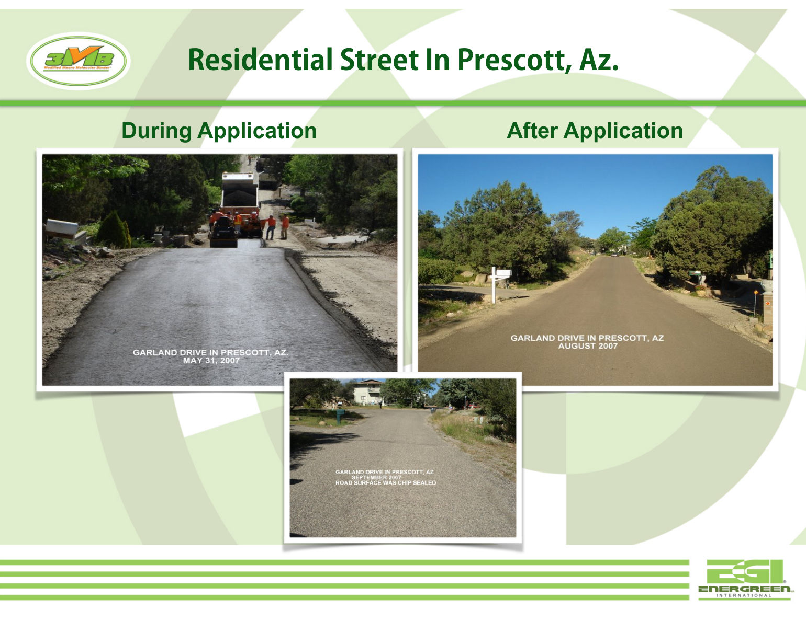
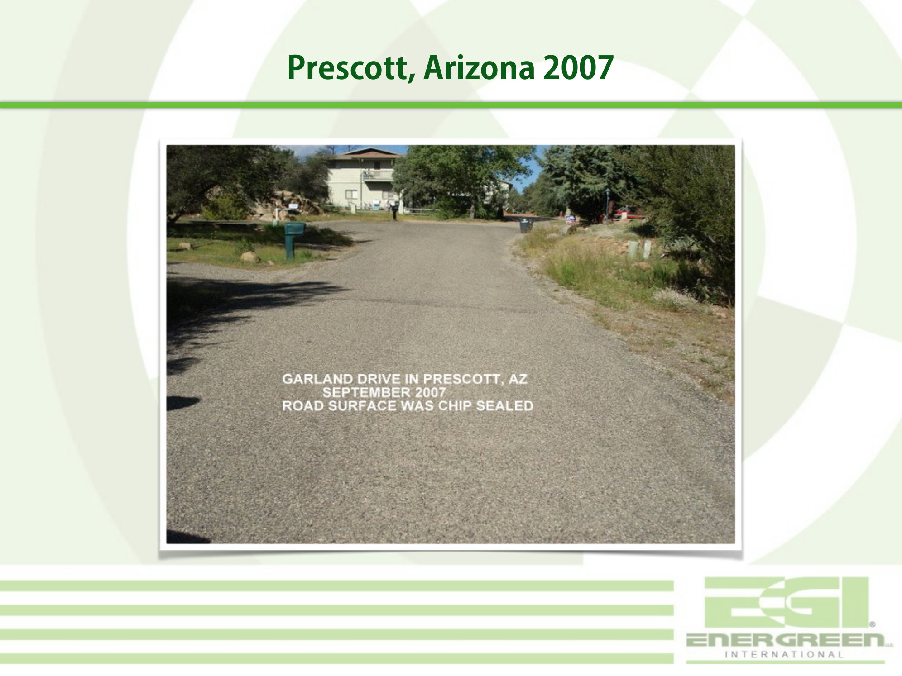
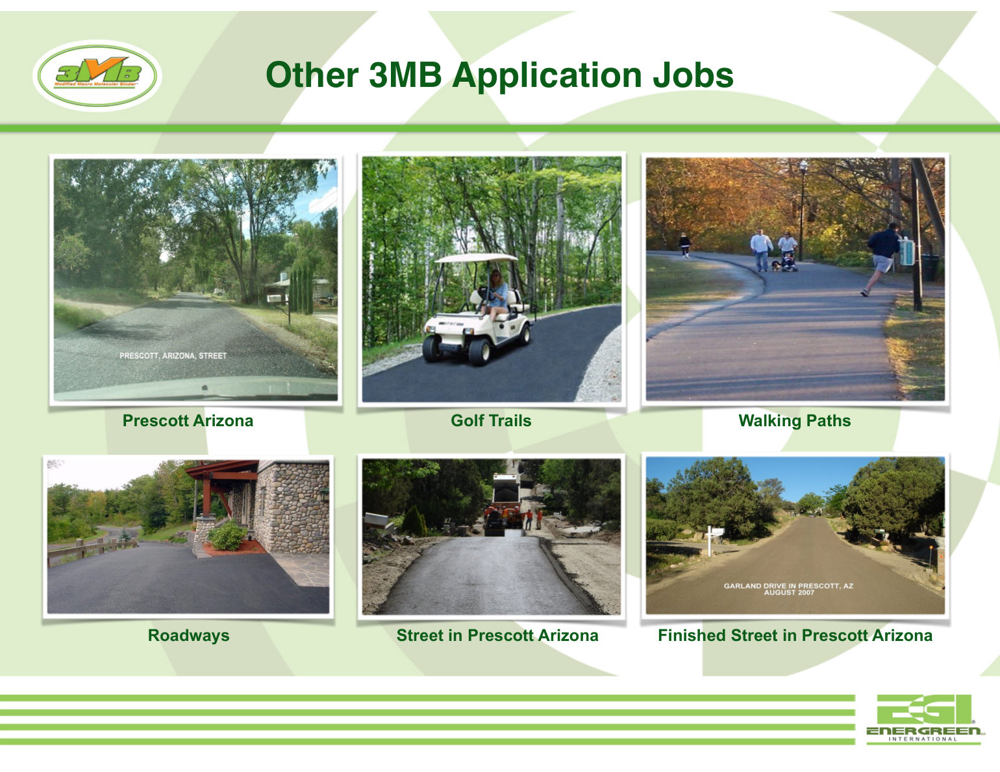
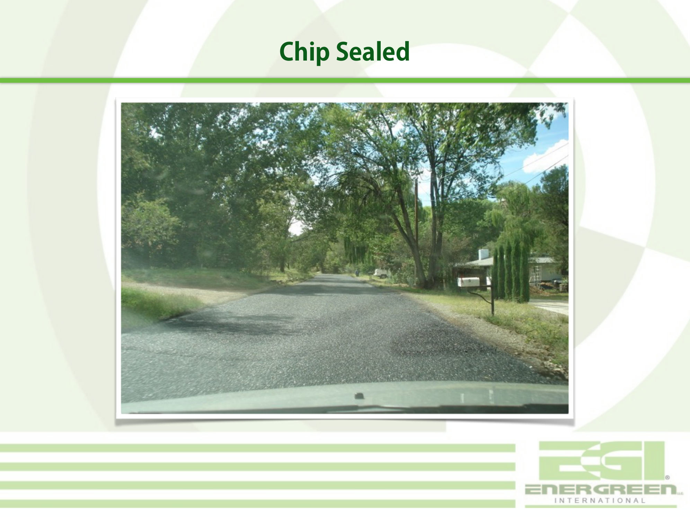
On December 9, 2009, a public-park parking lot in Yuma was rolled, finished, and striped — ADA stalls included. At the Cemex concrete plant in Yuma, the deck's own caption records that 250 tons of dirt were used to develop the parking lot and driveway.
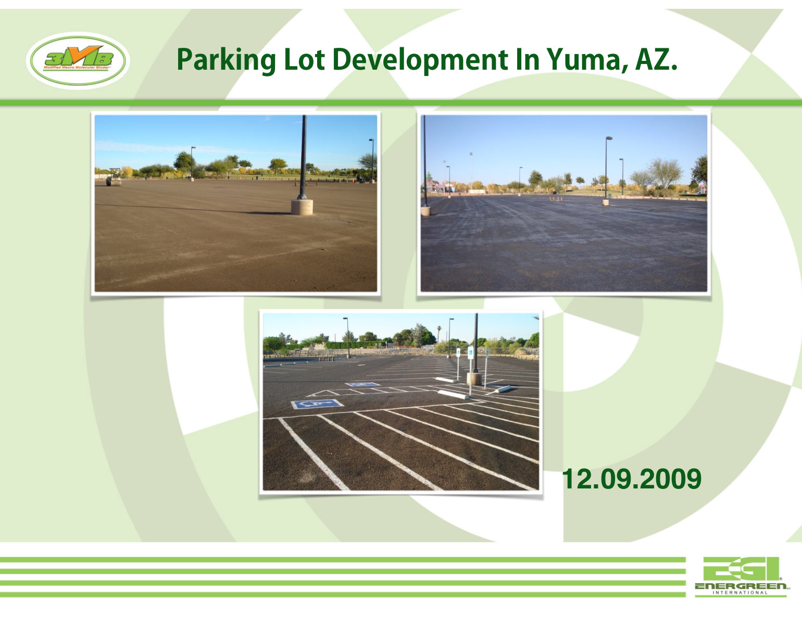
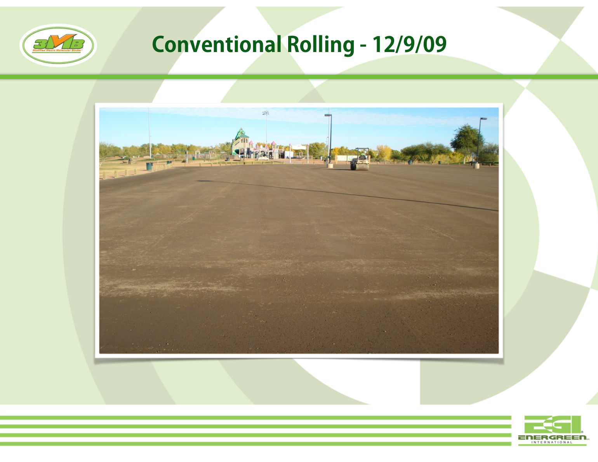
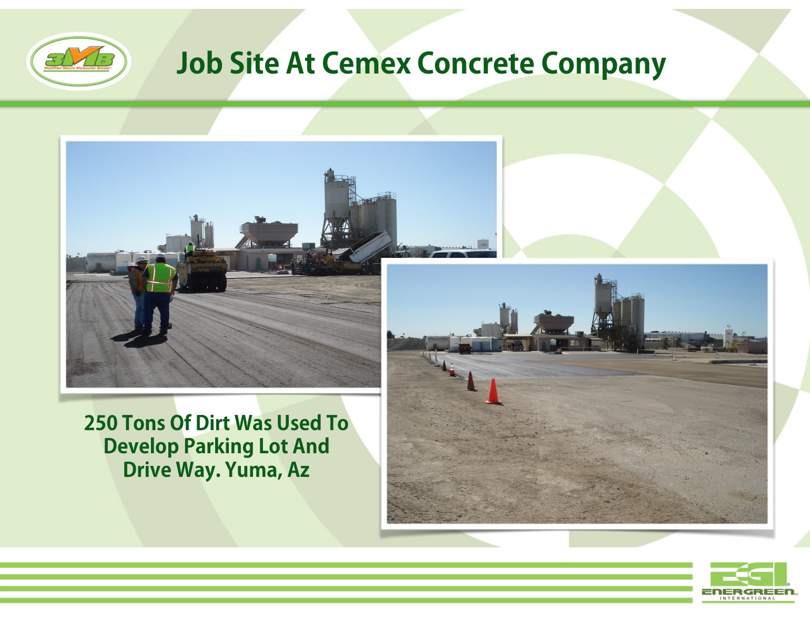
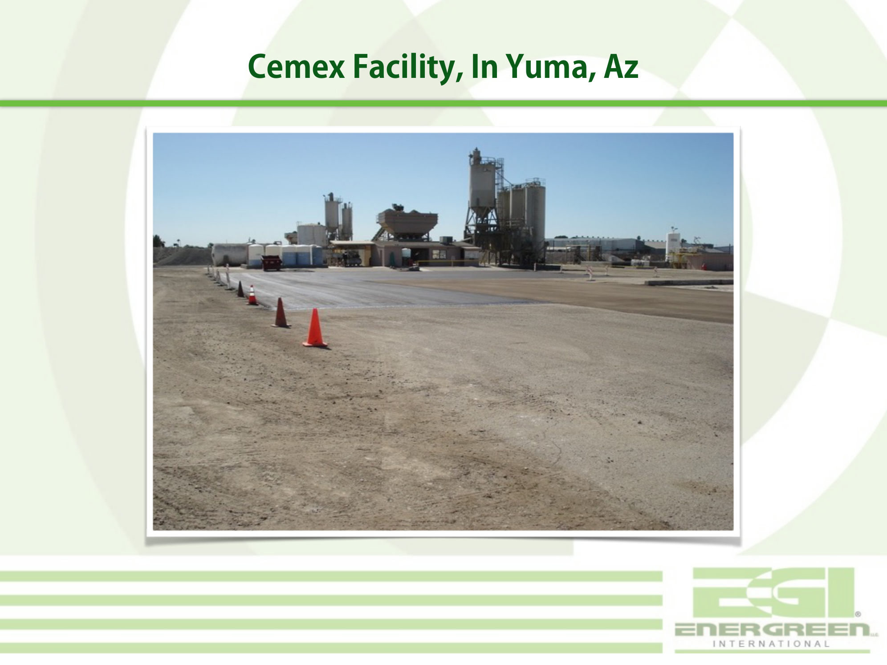
In Show Low, a new curbed subdivision road was compacted on treated base (the slide itself carries no date). At the Castle Dome plant, an access road was installed in October 2007 and chip-sealed.
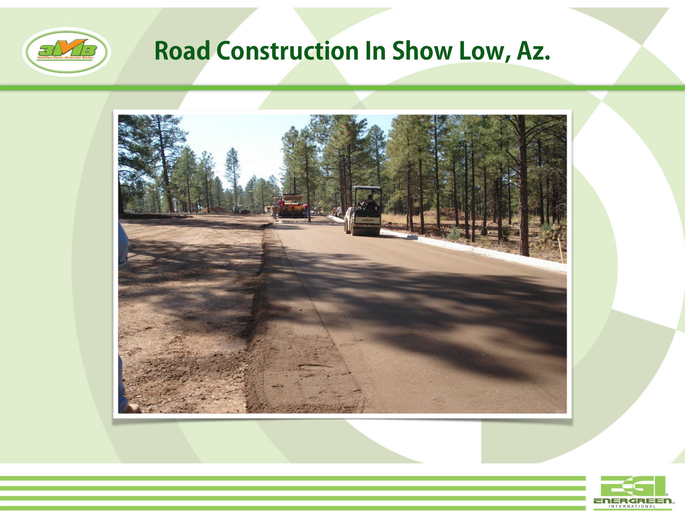
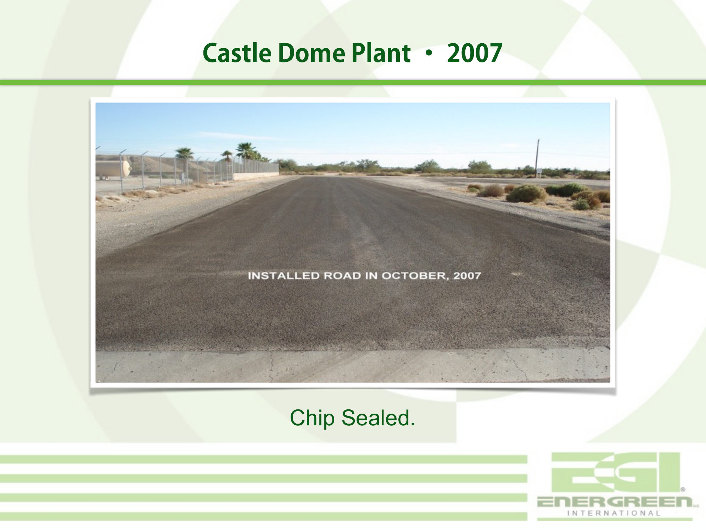
The 2017 master deck includes a worked example for one kilometer of road, 6.1 meters wide: cement at $477,630 installed, asphalt at $545,889 installed (priced at then-current oil prices), and $390,000 in 3MB material. Read the fine print before quoting it: the 3MB figure is material only — sealer and installation excluded — against installed costs for the alternatives, and the deck's own disclaimer says ratios are project-specific. It is reproduced here as a historical document, not as a like-for-like comparison; the calculator handles the honest version of this math.
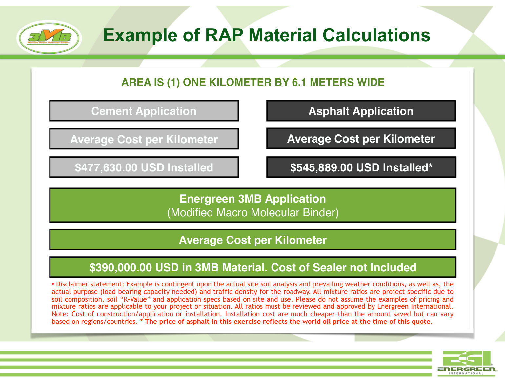